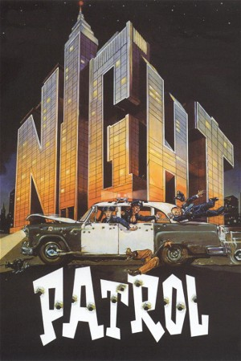

Night Patrol (1984)
Comedy
| Year | 1984 |
|---|---|
| Rating | US:R / US:Rated R |
| Genre | Comedy |
Melvin White, a neurotic, accident-prone cop who gets demoted to the night shift, secretly moonlights as the Unknown Comic, an anonymous stand-up comedian who performs with a paper bag over his head. When someone using the same guise commits a string of bar robberies in town, some begin to suspect that White is the culprit.